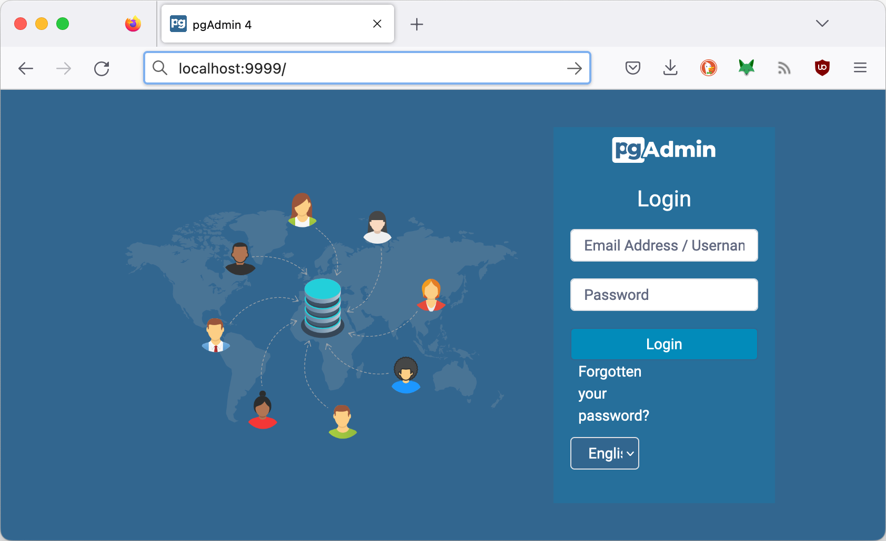

{% extends "../_base_template.html" %}
{% block title %}Lektion 7 - Networks, Volumes{% endblock %}

{% block sections %}
<section data-markdown>
<textarea data-template>
# <i class="fas fa-graduation-cap"></i> M347 - Dienste verbinden - Networking, Volumes

## Heutiges Ziel

- Sie kennen das **Networking**-Konzept in Docker und können Dienste via Netzwerk miteinander verbinden
- Sie kennen das **Volumes**-Konzept in Docker und können Daten persistent für Container zur Verfügung stellen
- Sie haben den API-Backend-Dienst vom Monolithen in einen eigenen Container / Dienst "verpackt"
- Der API-Dienst speichert / liest die Daten von einem (persistenten) PostgreSQL-Datenbank-Dienst

Dafür nehmen wir uns 2 Lektionen Zeit, da dies recht viel Stoff beinhaltet.
</textarea>
</section>


<!-- ----------------------------------------------------------------------------- -->
<section data-markdown>
<textarea data-template>
# <i class="fas fa-graduation-cap"></i> Auf dem Weg zur Microservice-Architektur

Was haben wir bis jetzt erreicht?

<div style="display: flex; gap:10px">
  
  <div style="flex-grow: 1;">

* Wir haben bereits folgende Dienste von unserem Monolithen extrahiert:
    * **Frontend**, welches unsere statische Webseite liefert
    * **Feedback-Service**, welcher die Formulardaten vom Frontend entgegennimmt und via Mail verschickt
* noch offen ist der API-Dienst, welcher in unserem Demo kleine Texte speichert / ausliefert
  </div>
</div>

</textarea>
</section>

<section data-markdown>
<textarea data-template>
# <i class="fas fa-graduation-cap"></i> Auf dem Weg zur Microservice-Architektur

Wir gehen nun den letzten Schritt, und lösen den letzten Dienst von unserem Monolithen: Den **API-Dienst**, welcher bis
anhin die Routen **`/api/save-text`** und **`/api/get-texts`** zur Verfügung gestellt hat. Unsere Ziel-Architektur sieht so aus:

<div style="display: flex; gap:10px">
  
  <div style="flex-grow: 1;">

Der Umbau beinhaltet 2 Schritte:

1. Unsere API erhält einen **eigenen Dienst / Container** (der letzte Schritt unserer Extraktion)
2. Wir speichern die Daten (Texte) in **einer eigenen, richtigen PostgreSQL-Datenbank**, anstatt
   in einem In-Memory-Container
  </div>
</div>


</textarea>
</section>

<!-- -----------------------------------------------------------------  -->
<section data-markdown>
<textarea data-template>
# <i class="fas fa-flask"></i> Umbau - API-Dienst als eigener Container

## Aufgabe

Extrahieren Sie den Teil des Monolithen, der die Routen **`/api/save-text`** und **`/api/get-texts`** abhandelt, in einen eigenen Docker-Dienst (Container).
Ziel ist die Implementation der Architektur auf der vorhergehenden Folie, noch ohne die Datenbank.

## Vorgehen

1. Erstellen Sie einen eigenen Ordner mit einem Dockerfile für den neuen Dienst.
1. Analysieren Sie im File **`monolith/server.js`**, welche Code-Teile Sie für den API-Dienst benötigen.
1. Erstellen Sie dann ein neues `server.js` und zugehörige, notwendige Files (z.B. package.json) im neuen Dienst-Verzeichnis
1. Erstellen Sie ein Docker-File und damit einen eigenen Container, und bringen Sie den API-Dienst darin zum Laufen.
1. Passen Sie den **`frontend`**-Code an, sodass dieser den neuen API-Container "bedient".
1. Achten Sie darauf, dass die Container miteinander kommunizieren können, wo/wenn nötig: Konfigurieren Sie die korrekte Netzwerk-Verbindungen!

## Zeit, Umsetzung

Sie haben nun während dieser Lektion Zeit, dies umzusetzen. Sie dürfen dies gerne auch **zusammen** angehen, diskutieren, helfen!

Gegen Ende der Lektion tragen wir zusammen, wo Sie stehen, und führen ev. gewisse Schritte noch zusammen durch.
</textarea>
</section>

<!-- -----------------------------------------------------------------  -->
<section data-markdown>
<textarea data-template>
# <i class="fas fa-flask"></i> Umbau - Was haben wir erreicht?

Die nun umgesetzte Architektur sieht folgendermassen aus:

<div class="d-flex gap-10">
  
  <div>
    <br />
    
* Unser Monolith ist nun aufgetrennt in die 3 Services
  * Frontend
  * Feedback
  * API-Service<br />
  aufgetrennt
* **Der Monolith ist somit komplett in Micro-Services überführt! <i class="far fa-smile"></i>**
* Es fehlt noch eine persistente Datenbank für unsere Textsammlung (API).
  </div>
</div>
</textarea>
</section>


<!-- -----------------------------------------------------------------  -->
<section data-markdown>
<textarea data-template>
# <i class="fas fa-flask"></i> Teil 2 - Persistente Datenbank

Wir wollen nun in einem weiteren Schritt unsere Daten, welche an die API geliefert kommen, **persistieren**,
also speichern, sodass sie auch einen Applikations-Neustart überleben.

Dazu bauen wir einen weiteren Dienst als Container auf: einen **Datenbank-Server**. Wir verwenden dazu [PostgreSQL](https://www.postgresql.org/),
eine der fortschrittlichsten OpenSource-Datenbanken.

## Auftrag 1

Erstellen Sie einen laufenden Container direkt ab dem offiziellen Docker-Hub-Image [postgresql](https://hub.docker.com/_/postgres/):

* Definieren Sie ein Dockerfile für den Dienst, und daraus ein Image
* Definieren Sie das vollständige `docker run`-Kommando
* Vorgaben für das Image / den Container:
  * Nutzen Sie das Basis-Image vom Dockerhub, siehe oben.
  * Sorgen Sie dafür, dass intial ein User und eine Datenbank (z.B. "api_data" o.ä) erstellt wird:
    Dazu können Sie die Konfiguration des "Init Scripts" verwenden (Siehe Dockerhub-Dokumentation zum Image: "Initialization scripts"):
    Ein Beispiel dazu finden Sie auf dem Dockerhub. Erstellen Sie ein solches Script und sorgen Sie dafür, dass es mittels Dockerfile
    am richtigen Ort im Image landet.
  * Erstellen Sie für die Datenablage der Datenbank (siehe PGDATA in der Dokumentation) ein **Docker-Volume**, und verbinden Sie dieses
    beim Erstellen des Containers
  * Sorgen Sie dafür, dass Ihr API-Container mit dem DB-Container via Netzwerk kommunizieren kann: Nehmen Sie den DB-Container in
    ein gemeinsames Docker-Netzwerk auf!
  * Exponieren Sie den Port "5432": Dies ist der PostgreSQL-Port, den wir für die Entwicklung auch von aussen anziehen wollen


<i class="far fa-hand-point-right"></i> Im nächsten Schritt installieren wir "**PGAdmin**", ein grafischer Client für
PostgreSQL-Datenbanken, um den Zugriff zu testen.
</textarea>
</section>

<!-- -----------------------------------------------------------------  -->
<section data-markdown>
<textarea data-template>
# <i class="fas fa-flask"></i> Teil 2 - Persistente Datenbank - PGAdmin

Damit Sie nun zur Entwicklungszeit auf die Datenbank zugreifen können, brauchen wir noch ein Client-Programm.
Dazu eignet sich [ "**PGAdmin**" ](https://www.pgadmin.org/), welches ebenfalls als Docker-Container installiert werden kann:

Auf [Dockerhub](https://hub.docker.com/r/dpage/pgadmin4/) finden Sie detaillierte Informationen zum Installieren / bedienen:

```sh
docker run --name pgadmin -p 9999:80 \
    -e 'PGADMIN_DEFAULT_EMAIL=user@domain.com' \
    -e 'PGADMIN_DEFAULT_PASSWORD=SuperSecret' \
    -d dpage/pgadmin4
```

<i class="far fa-hand-point-right"></i> Sie können PGAdmin nun unter <http://localhost:9999/> erreichen:


</textarea>
</section>

<!-- -----------------------------------------------------------------  -->
<section data-markdown>
<textarea data-template>
# <i class="fas fa-flask"></i> Teil 2 - Persistente Datenbank - Umbau API-Service

Nun ist es Zeit, unseren API-Service umzubauen, damit dieser die Daten auch in der persistenten Datenbank speichert.

## Auftrag 2

* Schauen Sie sich den Code von `server.js` vom API-Dienst an:
  * Identifizieren Sie die Stelle(n), wo die Datenbank-Verbindung aufgebaut wird
  * Was müssen Sie daran ändern, damit die Verbindung zu Ihrer Postgres-Datenbank gemacht werden kann?
* Ändern Sie den Code so ab, dass neu nicht mehr die In-Memory-SQLite-DB, sondern Ihre persistente
  PostgreSQL-Datenbank angezogen wird!
* Denken Sie daran, die Container netzmässig miteinander zu verbinden!

Kleiner Tipp: Die Datenbank-Verbindungs-Parameter in `config.js` des API-Dienstes müssen nun auf die PostgreSQL-Datenbank
angepasst werden:

Anstatt

```
database: {
  client: "sqlite3",
  connection: { filename: ":memory:", },
  initialSql: "CREATE TABLE IF NOT EXISTS textinput (id INTEGER PRIMARY KEY AUTOINCREMENT,textinput TEXT)",
},
```

benötigen Sie für PostgreSQL dann IN ETWA (Beispiel) so etwas:

```
database: {
  client: "pg",
  connection: { host: "db", port: 5432, user: "m347", password: "m347", database: "m347", },
  initialSql: "CREATE TABLE IF NOT EXISTS textinput (id SERIAL PRIMARY KEY, textinput TEXT);",
},
```

<i class="far fa-hand-point-right"></i> Wir schauen uns dies am Schluss / bei Bedarf gemeinsam an.
</textarea>
</section>

{% endblock %}
